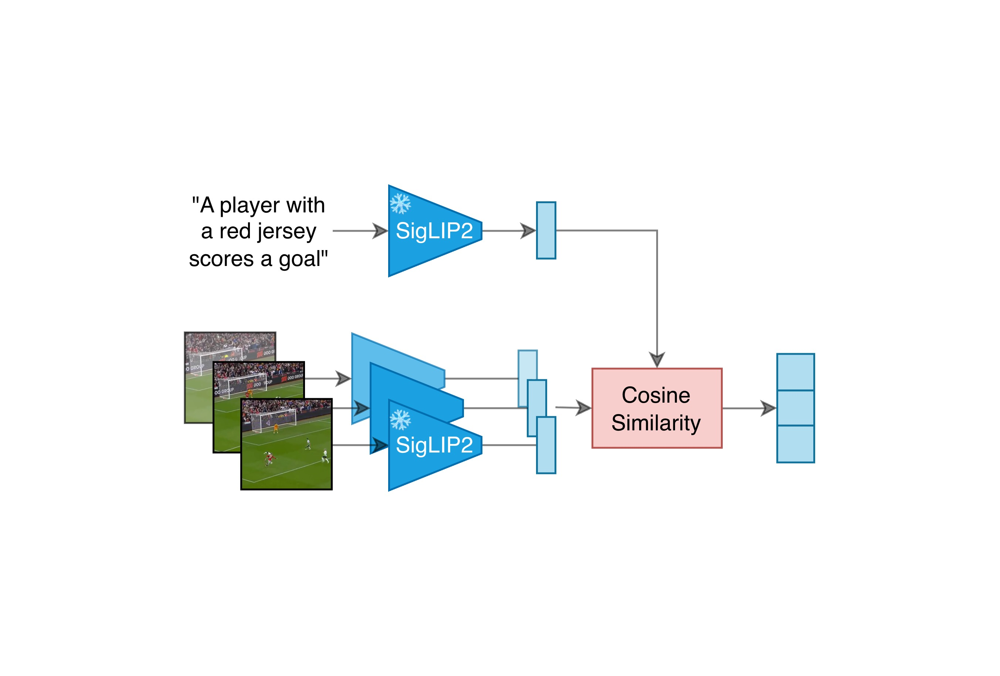
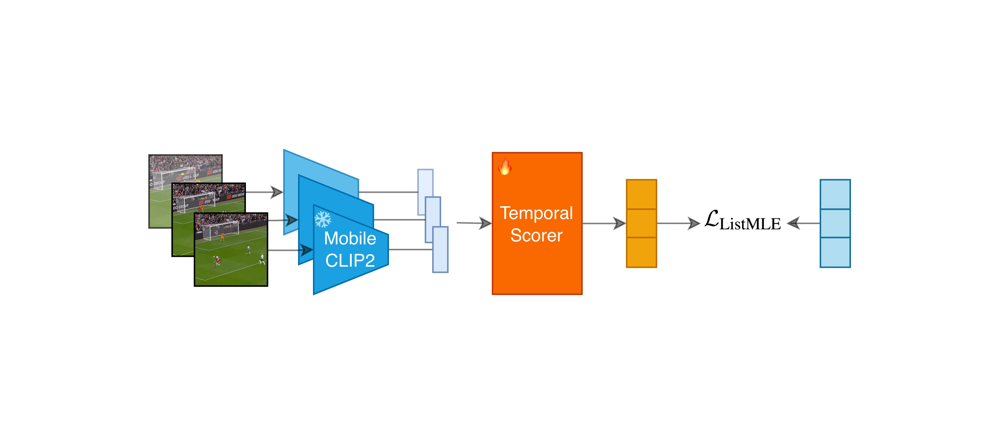
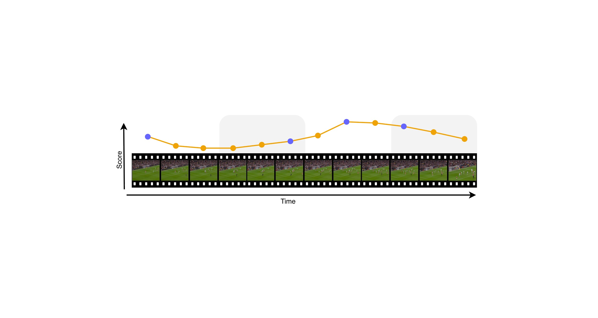
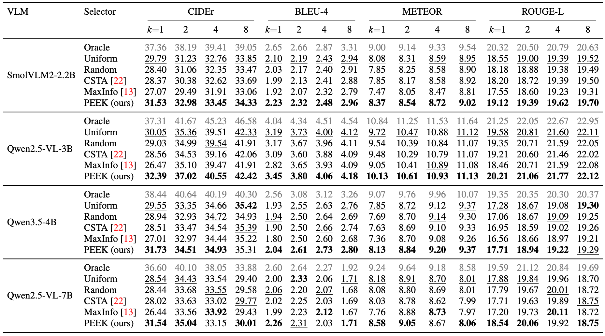
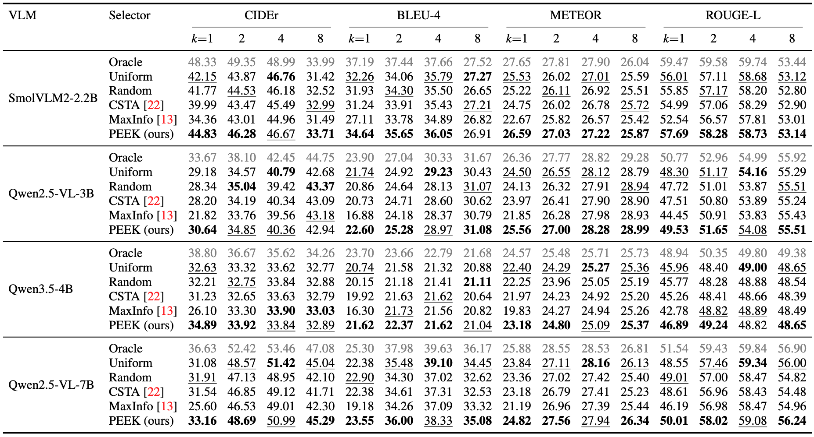
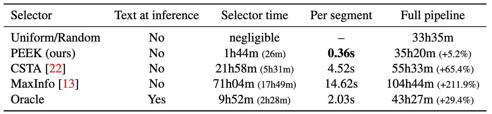

PEEK: Picking Essential frames via Efficient Knowledge distillation
Abstract
Video-language models can process only a limited number of frames, making frame selection a key bottleneck for efficient video captioning. Most captioning pipelines still rely on uniform sampling, which is computationally cheap but agnostic to visual content. Adaptive frame sampling has recently emerged as a promising approach for selecting the most informative frames from a video; however, existing methods remain computationally expensive. We introduce PEEK, an efficient dynamic frame sampling method that distills caption-conditioned frame relevance rankings from a stronger teacher model into a lightweight temporal model that operates only on visual content. We find that, overall, on ActivityNet Captions and MSR-VTT, our method outperforms the compared methods across all evaluated downstream vision language models, especially with one or two frames, obtaining the best CIDEr for most frame budgets. On ActivityNet Captions, PEEK is particularly strong, winning 14 out of 16 configurations. Our zero-shot evaluation on MSR-VTT shows that our model transfers best at low frame budgets, while results at four and eight frames are more mixed as temporal coverage and visual diversity become increasingly competitive. Compared with recent adaptive baselines, PEEK is both more accurate in the low-budget regime and more efficient: it adds only to the captioning time, compared with for CSTA and for MaxInfo.

In Stage 1, a frozen SigLIP 2 dual encoder acts as an Oracle teacher, producing per-frame relevance targets from ground-truth captions.

In Stage 2, a small Transformer distills the teacher's ranking into a query-free selector operating on MobileCLIP2 visual embeddings alone.

At inference, the segment is split into $k$ equal temporal windows and the highest-scoring frame within each (blue dot) is kept.
Results

ActivityNet Captions test captioning metrics with different downstream VLMs and frame budgets. PEEK uses the same ActivityNet-trained checkpoint for all downstream VLMs. Oracle scores frames against the ground-truth caption.

Zero-shot MSR-VTT test captioning metrics with different downstream VLMs and frame budgets. PEEK uses the same query-free ActivityNet-trained selector for all downstream VLMs. Oracle scores frames against the ground-truth caption.

Selection and end-to-end captioning time on the full ActivityNet Captions evaluation split with 17,505 segments, with SmolVLM2-2.2B-Instruct. Timings are measured on 4 x NVIDIA A10G GPUs.
BibTeX
@article{steunou2026peek,
title={PEEK: Picking Essential frames via Efficient Knowledge distillation},
author={Steunou, Killian and Filali Razzouki, Anas and Guetari, Khalil and El-Yacoubi, Moun{\^i}m A. and Tevissen, Yannis},
journal={arXiv preprint},
year={2026},
url={TODO}
}